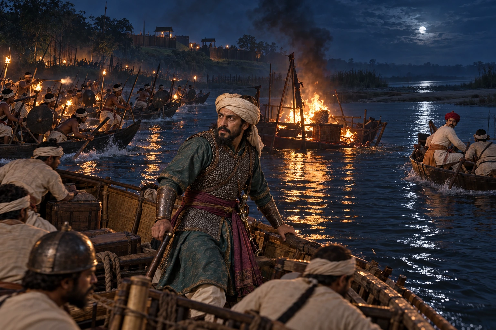

Night Attack at Samdhara: Abu Bakr's Fleet Destroyed
1615–1616 · Against the Mughal Empire

The first Mughal invasion under Sayyid Abu Bakr and Satrajit takes Kajali, then is destroyed in a night attack by the Bharali–Brahmaputra confluence. Abu Bakr is killed, Satrajit escapes, and Pratap Singha builds a fort at Samdhara inscribed 'Victory in Unequal Battle'.
Wikipedia dates the Battle of Bharali to 1615 and the Battle of Samdhara to January 1616. Pratap Singha and Qasim Khan are not physically shown.
Sources
People: Abu Bakr, Raja Satrajit of Bhusna, Qasim Khan Chishti, Pratap Singha (Susenghphaa)